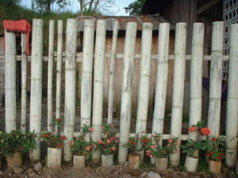
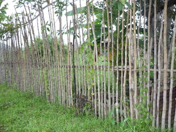

alad  
/ʔalad/
n.
“fence/city-wall”
n.
a fence
Ka alad iyan ka elet te minsan nekey iling te baley wey ke kamet naa. Innimu seini ligkat te kayu, batu wey ke putew naa. Egkaayun ne miggiketan dè seini te me burakan wey ke balahan wey minsan nekey pad ne klasi te hiket, wey egkaayun degma ne eglansangan, egpegdeketan pinaahi te peggamit te igpareket ne malamiket. Ne egkaayun degma ne egwildingen ke putew.
Eggimu a te alad su eyew kenè egkeenen te me babuy ka me pinamula ku.
I am making a fence so that the pigs won't eat what I have planted.
Eng. fence
Tag. bákod
Ceb. kural
Ilo.: álad
Tigwanon: ʔalad
Binukid: ʔalad
Kinamigin: ʔalad
Sarangani: ʔalad
WBM: ʔalad
Ilianen: ʔalad
Obo: ʔaad
Dibabawon: ʔaad
Tagbawa: alad
Proto: ʔalad
OCM: Grounds (351)
Online dict status: -
Usage level: B
v.
for someone (eg-alad, mig-alad/in-alad, agent, eg><ø-) to erect a fence (eg-alaren, in-alad/mig-alad/pig-alad, alaren, patient, eg><en-) somewhere (eg-alaran, in-alaran/mig-alaran/pig-alaran, location, eg><an-)
Data Qual: need to extend meanings - does not include all example sentence
Eg-alad sikandan te baley ran ne diyè te bubungan ne egngaranan te masaluut.
They will erect a fence of their house at Mansaluut's mountain.
Eg-alaran din ka egtahuan te similya su eyew kenè egkalugsek te me batè wey me ayam.
He is lining up the places where the seedlings will be planted so that children and animals will not trample on them.
Eng. erect a fence; fencing; line up
Online dict status: -
Usage level: M
Updated by: RJH,JLM,TME,RJH,AAA,QDL,RAA
Last updated: 30/Jul/2010
This page last updated: 19/May/2012
Copyright © 2009-2010, Matigsalug Language Christian Association, Inc